Marreq User Manual
Requirement Manager (Marreq) is a web-based
requirements and test management system. This manual describes how to
use the application from the end-user perspective.
IBM DOORS users: See Migrating from DOORS to
Marreq for concept mapping, workflow comparison, and
migration steps.
For a typical end-to-end workflow (project setup →
requirements → tests → traceability → approval → baselines → export),
see Typical Workflow with
Marreq.
Table of Contents
- Introduction
- Getting Started
- Projects
- Requirements
- Test Management
(Verifications)
- Traceability
- Baselines
- Categories,
Applicability & Verification
- Reports & Export
- Import
- Project Members
- Profile & Account
- Administration
- Tips & Shortcuts
1. Introduction
Marreq helps you:
- Manage requirements in a hierarchy, with version
history, comments, and approval workflow
- Manage verifications (tests, analyses, inspections,
reviews): organise them in a hierarchy, track their status (e.g.
Passed/Failed/Pending), link them to requirements, and see coverage on
the dashboard, requirement pages and reports
- Explore traceability in a coverage graph, a
hierarchy graph, a dependency structure matrix and the requirement ×
verification matrix
- Produce documents such as the Verification Control
Document (VCD) and a traceability & coverage report, as PDF or
ODT
- Create immutable baselines for audits or
releases
- Import/export via Excel/CSV, ReqIF 1.2 / ReqIFZ
(with attached files), and project bundles
Data is organized by projects, which can belong to
groups. Each project has its own requirements,
verifications, catalog (categories, applicability, statuses,
verification methods, custom fields), members and baselines. You must be
signed in to use the application.
See Typical Workflow with
Marreq for a step-by-step workflow from project setup
through baselines and export.
2. Getting Started
2.1 Signing In
- Open the application in your browser (the address your administrator
gives you).
- Enter your Username and Password
and select Sign in.
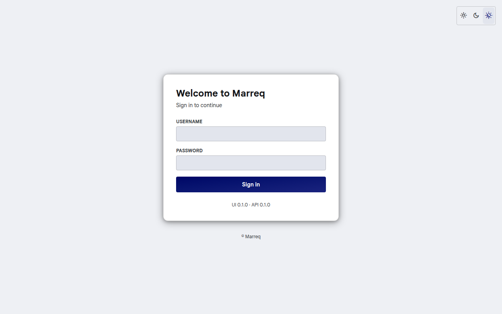
Depending on how Marreq is set up, the login page also offers:
- Continue with … buttons to sign in with your
organisation's single sign-on.
- Forgot your password? and Create an
account (on installations that allow self-registration, such as
the hosted cloud service). A new account must confirm its email address
before it can sign in.
The UI and API versions are shown under the login card. If they do
not belong together, a banner at the top of the application says so; ask
your administrator to update.
If you use a demo setup, typical users include alice,
dr_smith, eng_jones, tech_lee and
qa_wilson; the default password is
ChangeMe123! unless your administrator changed it.
- Theme: the Light / Dark / Auto
buttons at the top right of the login page (and in the top bar inside
the application) switch the colour theme; Auto follows your
system. The choice is stored in the browser.
- Sign out: open the user menu (the circle with your
initials, top right) and select Sign out.
2.2 Start Screen
After signing in you land on the start screen
(/). It asks Where to? and gathers what
you need to pick up your work across all your projects:
Search (focused straight away; Ctrl
K or ⌘ K from anywhere on the page): type part
of a project name, a requirement's reference code or title (e.g.
REQ-PWR-012 or battery), or an action such as
new project or groups. Requirements are searched in
every project you can see, from two characters on. Use the arrow keys
and Enter to open a result, Esc to
clear.
Needs your attention: what is waiting for you,
newest first, with a one-line summary above the search box:
- requirements waiting for your approval (marked
Reviewed) and the number of drafts to review,
in projects where you are a project reviewer (§11.1);
- suspect links to review, in projects where you can
edit;
- unread notifications that ask something of you: you were made a
requirement's reviewer, or someone commented on your requirement.
Select a row to open the requirement, the draft list, or the Matrix
filtered to suspect links. Opening a notification marks it read. The
first four rows are shown; Show all lists the rest.
Archived projects (§3.5) never
appear here.
Recent: the last page you opened in each of your
three most recent projects (for example Requirements ›
REQ-PWR-012). It is kept in your browser, so it starts empty on a
new browser; until then the list shows your projects instead.
New project, Import and
Groups, and All projects (n) and
Archived (n) to list your projects.
The Marreq logo at the top of the project sidebar
brings you back here. Links to a specific page (for example from a
notification email) still open that page directly.
If you are not a member of any project yet, you see You don't
have any projects yet with New project,
New group, Change password and
Sign out.
2.3 Dashboard
Each project opens on its Dashboard,
/<project-slug>/dashboard, titled Project
overview.
- Counts: Requirements, Verifications, Matrix links,
and Req. with tests (the share of requirements linked
to at least one verification).
- Traceability health: Gaps
(requirements without tests), Orphans (tests without
requirements) and Suspect (links flagged as suspect).
Each card opens the matching list on the Reports page.
- Quick links to Requirements, Verifications,
Traceability and Reports.
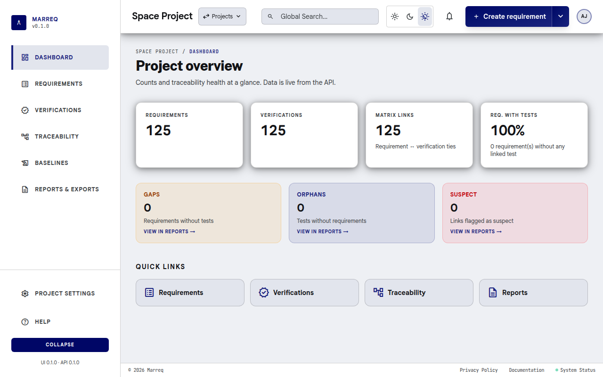
2.4 Navigation
Inside a project, the sidebar on the left holds the
pages you work in every day:
| Item |
Description |
| Dashboard |
Counts and traceability health of the project |
| Requirements |
The requirement list (table, list or graph view) |
| Verifications |
Verifications (test cases, analyses, reviews) and their status |
| Traceability |
Coverage graph, hierarchy, dependency structure matrix (DSM) and the
requirement × verification Matrix, as tabs |
| Baselines |
Immutable snapshots of the project |
| Reports & exports |
Coverage reports and Excel, PDF, ReqIF/ReqIFZ and JSON
downloads |
At the top of the sidebar, the Marreq logo opens the
start screen (§2.2). At the bottom:
- Project settings: one page with tabs for
General (name, status, owner, group), Members
& reviewers, Catalog (categories,
applicability, statuses, custom fields, verification methods),
Storage, Notifications and
Import.
- Help, the Collapse button (the
sidebar remembers whether it is collapsed) and the UI and API
versions.
The top bar holds:
- the project name and the Projects menu: switch to
another project (you stay on the same page), or open
Groups, New project or Import
project bundle;
- Global Search, the theme switch (light, dark, match
system) and the notifications bell (§2.5);
- the Create button: its main part creates a
requirement (a verification when you are on the Verifications pages);
the arrow next to it offers Create requirement,
Create verification and Import;
- the user menu (avatar): Account settings,
Administration (instance administrators only, see §13), Change password and Sign out.
On a narrow screen the sidebar is hidden; open it with the
☰ button in the top bar.
Global Search filters what is on screen as you type:
the Requirements table, the Verifications list and the Matrix. It is not
a full-text search of the whole project.
Older links keep working: /<project>/matrix opens
the Matrix tab, /<project>/import,
/<project>/members and
/<project>/catalog/… open the matching Project
settings tab, /<project>/admin/… opens the
Administration area, and links that still contain an owner or group name
before the project are redirected.
2.5 Notifications
The bell in the top bar shows how many notifications you have not
read (up to 99+). Open it to see the list; select a
notification to go to the requirement it is about, or Mark all
as read. The list refreshes on its own.
You are notified when you are made the reviewer of a
requirement, and, in projects where you turned them on, when
requirements are created, updated or deleted. Choose per project in
Project settings › Notifications: In-app
notifications for this project and Email notifications
for this project.
2.6 Help
Help at the bottom of the sidebar
(/<project-slug>/help) summarises the main pages and
shows the versions of the UI and the API with links to the most used
pages.
3. Projects
3.1 Switching Projects
Open the Projects menu (the project name in the top
bar). It lists your projects: select one to switch to it, staying on the
same kind of page. Archived projects (§3.5) are grouped under
Archived (n) at the end of the list; select it to show
them. The menu also has Groups (§3.7), New project and
Import project bundle (§10.3).
Project URLs use the project slug only
(/<project-slug>/dashboard). Owner usernames and
group names are not part of the path. Opening
/<project-slug> shows the project's Dashboard.
3.2 Creating a Project
- Projects → New project
(
/projects/new).
- Choose the Namespace: Personal or a group
in which you may manage projects.
- Enter the Project name and an optional
Description.
- Select Create project. You become the project's
Admin and land on its dashboard.
Every new project starts with default statuses, verification methods
(Inspection, Test, Analysis, Review), one category and one applicability
value. Before anyone can create requirements, add at least one
project reviewer (§11.1). To start from
an existing project instead, use Import from JSON
bundle on the same page (§10.3).
3.3 Editing a Project
Open Project settings at the bottom of the sidebar.
The General tab
(/<project-slug>/settings/general) shows the
project's properties:
- Name (2–100 characters) and
Description (up to 1000 characters; leave empty to
remove it).
- Status: Active, On hold, Completed or
Cancelled.
- Owner: any member of the project.
- Group: the group the project belongs to, or
Personal (no group). The list shows the groups where you may
manage projects. Moving a project needs that right in both the current
and the new group.
- URL: the project's address
(
/<project-slug>). It stays the same when you rename
the project, so existing links and bookmarks keep working.
Change the fields and select Save changes. The new
name appears in the header, the sidebar and the project list right away,
and the change is recorded in System logs with the old
and new values. Discard resets the form.
Only project Admins and instance administrators can
change these properties. Other members see them read-only.
3.4 Project Storage
Files attached to requirements and verifications (§4.9) count toward the project's storage
limit. Project settings › Storage shows:
- How much of the limit is used. Each file counts once, even when the
same file is attached in several places.
- How much of that is taken by deleted files that baselines still keep
(§7.3).
- The largest file allowed and the file types that can be
uploaded.
The defaults are 10 MB per file and 500 MB
per project. The server administrator sets them with
MARREQ_ATTACHMENT_MAX_MB and
MARREQ_PROJECT_STORAGE_QUOTA_MB. Instance administrators
can give a project its own limit in Project settings ›
Storage, or use Reset to default to go back to
the server-wide value. The change is recorded in System
logs. A limit below the current usage is allowed: it only
blocks new uploads.
3.5 Archiving a Project
Archive a project that is finished but must be kept, for example for
audits. An archived project is read-only for everyone,
instance administrators included: nobody can edit requirements or
verifications, links, comments, approvals, baselines, saved views,
report templates, members, reviewers, the catalog or the project's
settings. Members can still open it, search it and export anything from
Reports & exports (§9). Nothing is deleted.
The project owner and instance administrators can
archive a project. Open Project settings › General and
select Archive project… in the Danger
zone, then confirm with Archive project. The
change is recorded in System logs.
While a project is archived:
- a banner at the top of each page says so, and the
Create button is hidden;
- the project moves to the Archived section of the
Projects menu (§3.1) and is marked
Archived on its group's page;
- any attempt to change it is refused with This project is
archived; unarchive it to make changes.
To make changes again, the owner or an instance administrator selects
Unarchive in the banner, or Unarchive
project in Project settings › General. The
project returns exactly as it was.
3.6 Deleting a Project
The project owner and instance administrators can
delete a project. Open Project settings › General and
select Delete project… in the Danger
zone at the bottom of the page. Other members see who can
delete the project instead.
Deleting a project cannot be undone. It removes
everything in the project:
- requirements, with their versions, links and comments;
- verifications and the traceability matrix;
- baselines (including frozen ones) and saved views;
- attachments and their files (a file that another project also uses
is kept);
- the catalog, custom fields, members, reviewers and storage
settings.
To keep the project but stop changes to it, archive it instead (§3.5). To keep a copy, export a
project bundle or a ReqIFZ archive from Reports &
exports first (§9). To
confirm, type the project's URL name (its slug, e.g.
satellite-demo) and select Delete project.
You are then taken to another project, or to the home page if you have
none left.
Users are not deleted. The project's entries in System
logs are kept, and a new entry records who deleted the project,
its name and how many requirements, verifications, baselines and
attachments it had.
3.7 Groups
Groups collect projects, for example per team or product line. Open
Projects → Groups (/groups) to see your
groups; New group creates one (name and description),
and you become its Owner.
A group page lists its projects and members. Group roles:
| Role |
Can |
| Owner |
Manage the group's members, and create or move projects into the
group |
| Maintainer |
Create or move projects into the group |
| Contributor, Viewer |
See the group |
Owners manage members on the group's Members page
(add a user with a role, change a role, remove). Delete
group asks for confirmation; projects in the group then need
another group or none. A project's own members and roles (§11) are managed in the project,
separately from the group.
4. Requirements
Requirements are the core artifact. Each requirement can have
multiple versions (history), comments,
attachments and an approval state (draft → reviewed →
approved). Requirements are linked to parent requirements (with a link
type such as derives from) and to the verifications that verify
them.
4.1 Requirements Views
- Requirements in the sidebar, or
/<project-slug>/requirements.
Switch between the views with the tabs above the list:
- Table for dense scanning, comparison, column
configuration and inline editing.
- List for reading and reviewing: one card per
requirement with its statement, status, approval, parent, verification
method, author and last change. It also works on narrow screens.
- Graph opens Traceability (§6), where the coverage graph, the hierarchy
graph and the matrices live.
Above the list:
- Filters: Status,
Category and Approval (All, Draft,
Reviewed, Approved), plus a Sort field with a ↑/↓
direction toggle. Reset Filters clears them. To search
by text, use Global Search in the top bar.
- Saved views: save the current filters and sort as a
named view with Save current as…, either
Private or Shared with the project.
Pick a saved view to apply it, Update it with the
current settings, or Delete it. A view used by a
baseline is marked locked and cannot be changed. A saved view
has its own link (
?saved_view=<id>).
- Columns (Table only): show or hide Key, Title,
Category, Parents, Status, Approval, Verification, Modified, Author and
Actions.
- Downloads: CSV with the rows shown
(after filters and search) and Excel with the whole
project (§9.2).
- The number of requirements found, and Show rows
(25, 50 or 100 per page).
In the Table view:
- Open a requirement with the View (eye) icon in the
Actions column; Edit and Duplicate are
next to it. Editing an approved requirement first asks for confirmation,
because it creates a new Draft version.
- Inline editing: click a Title, Category, Status,
Verification or Author cell to change it in place. The change is saved
straight away as a new version. Only project reviewers can change the
status (§11.1). Esc
or a click outside closes the editor.
In the List view, select a card's title to open the
requirement; its menu has Duplicate.
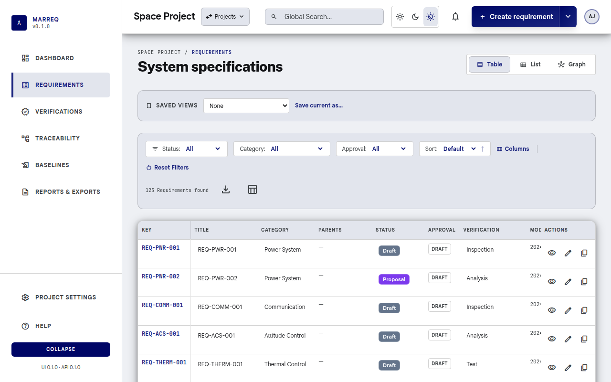
4.2 Requirement Detail Page
- URL:
/<project-slug>/requirements/<requirement_id>.
- For a specific version:
/<project-slug>/requirements/<requirement_id>/versions/<version_id>.
- Classic bookmarks
/<project-slug>/requirements/show/<requirement_id>
and
/<project-slug>/requirements/show/<requirement_id>/version/<version_id>
redirect to those URLs.
On the detail page you see:
- Header: reference code, title, approval badge
(Draft / Reviewed / Approved, with who approved and when) and the
buttons Compare versions, Duplicate
and Edit.
- Summary: priority (when the project has a
Priority custom field), version, author and reviewer.
- Approval actions (for project
reviewers, or an administrator when no reviewers are
configured): Mark as Reviewed and Approve
Requirement, each with a confirmation.
- Requirement statement and
Rationale, then category, applicability, verification
methods, parents with their link type, and the modified and created
dates. Custom metadata lists the project's custom
fields.
- Traceability: Upstream (parents),
Child requirements and Downstream
(verifications), each verification with its status badge.
- Verification close-out: the compliance assessment
and whether the requirement is closed (§5.7).
- Attachments (§4.9).
- Changelog: the version snapshots and the historic
activity from the audit log (§4.5).
- Discussion: the comments (§4.6).
Editing an approved requirement:
Edit on an approved requirement first warns that
editing creates a new Draft version; you can cancel or
continue.
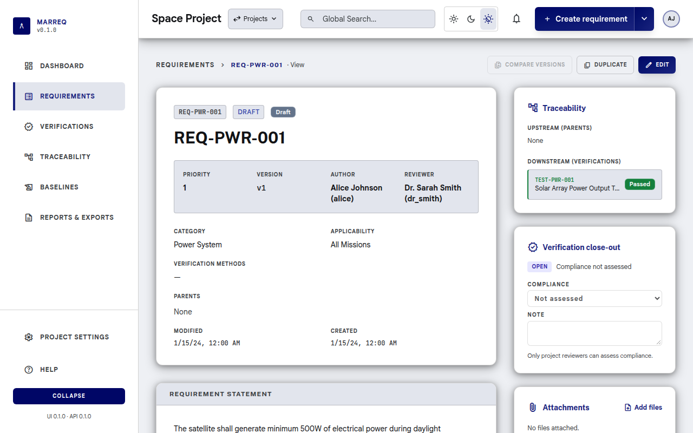
4.3 Creating a Requirement
- Use Create requirement in the top bar,
Duplicate on an existing requirement (§4.7), or Add
child in the hierarchy graph (§6.5).
- URL:
/<project-slug>/requirements/new.
- Fill in:
- Reference code (required, e.g.
REQ-0001) and Title (required)
- Statement (required; labelled
Description on the form, with the formatting toolbar
and preview described in §4.4)
- Rationale (optional)
- Status: project reviewers choose any status; other
users create in the project's default initial status
- Category and Applicability
- Verification methods (at least one)
- Author and Reviewer (the reviewer
list offers the project reviewers)
- Parent requirements: pick a requirement and a link
type, then Add parent
- Custom fields, if the project has any
- Select Create requirement (Create
duplicate when duplicating). The new requirement opens in the
editor.
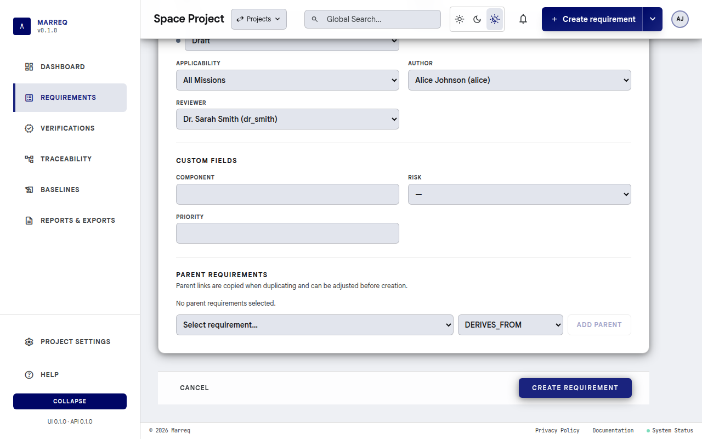
When creating is blocked. The button stays disabled,
with a link next to it, until the project has:
- at least one verification method (Add a
verification method opens Project settings › Catalog ›
Verification methods), and
- at least one project reviewer (Add a
reviewer in Project settings opens Members & reviewers, §11.1).
Links that fill in the form. The page accepts these
URL parameters:
| Parameter |
Effect |
?parent=<id> |
Adds requirement <id> as a parent (with the first
link type). The hierarchy graph's Add child uses
it. |
?from=<id> |
Duplicates requirement <id> (§4.7). |
?template=<id> |
Same as from; when both are given, from
wins. |
Combine them, e.g. ?from=12&parent=3. An id that is
not a requirement of this project (or a parent with no current version)
does not stop the page: a warning names it, for example Parent
requirement 99 is not in this project, and that part is left
out.
4.4 Editing a Requirement
- Open the requirement detail page.
- Click Edit.
- URL:
/<project-slug>/requirements/<requirement_id>/edit.
- Change title, statement, rationale, category, status (project
reviewers only), applicability, author and reviewer as needed. Parent
links are added and removed at once, without Save. Verification methods
and custom fields are not edited on this page.
- Select Save requirement to create a new version; it
is enabled once something changed. Revert changes puts
back the saved values. Cancel returns to the
requirements list; if you have unsaved changes it asks first and then
discards them.
Only project reviewers can change the Status (§11.1). Delete
requirement at the bottom left deletes the requirement
permanently, with its versions, links, comments and attachments, after a
confirmation.
Unsaved changes and drafts
While you type, the editor keeps a draft in this
browser, so a reload, a closed tab, a laptop that went to sleep
or an expired session does not lose your text. The footer shows the
state: Unsaved changes, then Draft kept on this
device with the time.
- A draft is not a version: nothing is sent to the
server, and only Save requirement creates a new
version.
- When you open the requirement again, the draft is put back and a
banner says so; Discard draft returns to the saved
text. If the requirement has been saved again since your draft (for
example by someone else), the draft is only offered: choose
Restore draft if it still applies.
- The New requirement page keeps a draft in the same
way and offers Restore draft the next time you open
it.
- If your session expires, Save tells you so; sign in again and reopen
the requirement: the draft is still there.
- Drafts belong to your user in this browser only (they do not follow
you to another computer), are removed when you save, discard or sign
out, and expire after 30 days.
The statement editor has a formatting toolbar and a Write /
Preview toggle. Statements are stored as a small, documented
Markdown subset, so they stay readable as plain text in exports:
| You want |
Type (or use the toolbar) |
Shortcut |
| Bold |
**text** |
Ctrl/Cmd+B |
| Italic |
*text* or _text_ |
Ctrl/Cmd+I |
Code |
`text` |
|
| Link |
[label](https://example.com) (only http,
https, and mailto links) |
Ctrl/Cmd+K |
| Bulleted list |
a line starting with - (or * ) |
|
| Numbered list |
lines starting with 1. , 2. , … (the first
number sets the start) |
|
| New paragraph |
a blank line (a single line break stays a line break) |
|
Anything else, such as headings, tables, or HTML, is shown literally.
Put \ before *, _,
`, [ or ] to show the character
itself. Preview shows the statement exactly as it
appears on the requirement page. The statement is limited to 2000 bytes
including the formatting characters; the counter under the editor shows
how much is used.
Formatting is shown on the requirement page, and version snapshots
and review cards show the text without markers. ReqIF export writes the
statement as XHTML so other tools keep the formatting, and ReqIF import
turns XHTML lists, emphasis, and links back into this format (see §9.4 and §10.2). Excel and JSON exports contain
the Markdown source.
4.5 Version History & Diff
- On the requirement detail page, the Changelog
section lists all versions (newest first); each shows approval state.
Click a version label (
v1, v2, …) to open that
version as a read-only snapshot
(/<project-slug>/requirements/<id>/versions/<version_id>).
- A historical snapshot shows title, statement, rationale, metadata,
custom fields, and approval as stored on that version. Edit, duplicate,
and adding comments are hidden. Use View current to
return to the latest version.
- Select Compare versions to compare any two saved
versions. The latest version and its predecessor are selected by
default.
- Use Compare with previous on a version-history row
to open that adjacent pair directly.
- When an older approved snapshot exists, use Compare with
last approved beside the approval state before reviewing the
current draft.
- The Compare requirement versions dialog shows
removed, added, and unchanged Title,
Statement and Rationale text (line by
line; statements are compared as their Markdown source, so each list
item is its own line). Under Metadata it also compares
status, category, applicability, verification methods, and custom
fields.
- At least two saved versions are required. Version comparison is
read-only and is available to anyone who can view the project
requirements.
- The Discussion section of the requirement page
lists the comments and has the form to add one. Each comment is attached
to the version that was current when it was written.
- Comments cannot be edited or deleted.
- When the current version is Approved, the form is
replaced by Comments are locked on this approved version.
Editing the requirement creates a new draft version, which can be
discussed again.
4.7 Duplicating a Requirement
- From the requirements list, detail, or edit page, select
Duplicate.
- The create page opens with a new reference code and copied title,
statement, rationale, catalog values, verification methods, custom
fields, reviewer, and parent links.
- Review or change those values before selecting Create
duplicate. The new requirement is independent: approval state,
version history, comments, and traceability-matrix links are not
copied.
4.8 Semantic Search (AI)
The web pages have no AI search. When your administrator has turned
on embeddings, AI assistants connected through Marreq's MCP server can
search requirements by meaning (the
semantic_search_requirements tool); see the MCP setup guide
linked under Support.
4.9 Attachments
Requirements and verifications can carry files, such as test reports,
drawings, analysis spreadsheets or photos. The
Attachments card is on the requirement view and edit
pages (right column) and on the verification view and edit pages.
- Download: select a file name. Files are always
downloaded; the browser never opens them inline.
- Upload (needs Edit requirements
permission): use Add files, or drag files onto the drop
area. You can pick several files at once.
- Delete: use the bin icon next to a file and
confirm.
Allowed types are PDF, PNG, JPEG, GIF, WebP, Word, Excel and
PowerPoint (.docx, .xlsx, .pptx),
OpenDocument (.odt, .ods, .odp),
ZIP, plain text (.txt, .log,
.md), CSV, JSON and XML. The server checks the file's
contents, not just its name: a file renamed to .pdf that is
not a PDF is refused. Other types, including HTML, SVG and programs, are
not accepted.
An upload is refused when the file is larger than the per-file limit,
or when it would take the project over its storage limit (§3.4). The message says how much space is
used. Uploads and deletions are recorded in System
logs.
Attachments belong to the requirement, not to one version, so
historical version snapshots do not show them. Baselines keep their own
list (§7.3). Deleting a requirement
or verification also deletes its attachments.
5. Test Management
(Verifications)
Test management in Marreq covers creating and organizing
verifications (tests, analyses, inspections, reviews), tracking their
status (e.g. Passed, Failed, Pending), and linking them to the
requirements they verify. In the UI, the sidebar item and pages are
named Verifications. Verifications are project-scoped
and can be arranged in a parent/child hierarchy.
The links between verifications and requirements are set on the
verification's create and edit pages
(Traceability (requirements)). Once linked, a
requirement's page lists the verification under Downstream
(verifications) with its status, and the Traceability views and Reports show the
coverage.
5.1 Verifications List
- Verifications in the sidebar, or
/<project-slug>/verifications.
You can:
- Switch between Table and List
(card) view. The view and the filters are kept in the URL, so switching
views, reloading, or sharing the link keeps them.
- See status metrics for the whole project above the
list: the Total, one chip per verification status with
its count (statuses with no verifications are dimmed;
Other counts verifications whose status is not in the
project's list), and a Pass rate ("X of Y passed") when
the project has a status named Passed. Click a status chip to
show only that status; click it again to clear the filter. The metrics
always cover the whole project, not just the filtered rows.
- Filter by Status and
Method (including No method), and search with
Global Search in the top bar (reference, title,
description, source, or parent). Reset Filters clears
status and method.
- Paginate through results (25, 50, or 100 rows per
page; controls appear above and below the list when there is more than
one page).
- Create a verification with Create verification in
the top bar (§5.3).
- Click a verification to open its Verification
detail page.
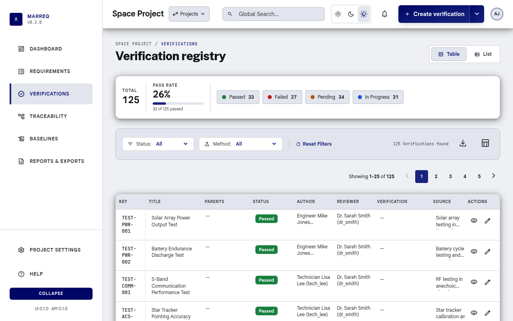
- Update verification status inline (e.g. set Passed
after a lab run): click the status in the table or list. Only
project reviewers with edit rights can change the
status; other editors can still edit the title, method, and source
inline.
- Export from the filter bar: CSV
contains the rows currently shown (after filters and search);
Excel contains every verification in the project (the
same workbook as §9.3
Exporting Verifications to Excel).
5.2 Verification Detail Page
- URL:
/<project-slug>/verifications/<verification_id>.
The page shows the Reference, name,
Status, Verification type (method),
Source (e.g. a test procedure or document reference),
Parent verification, Author,
Reviewer, the last status change, and the
Description with its formatting. Further sections:
- Linked requirements: the requirements this
verification verifies; Edit links opens the editor at
its traceability section.
- Verification control: level, stage and evidence for
the VCD (§5.7).
- Attachments (§4.9)
and Changelog (§5.2.1).
Edit (with edit permission) and Compare
versions are in the header. The status is changed in the editor
or inline in the list (§5.5).
5.2.1 Version history and
diff
- The verification detail Changelog lists audit-log
activity (creates and field updates).
- Select Compare versions to compare any two saved
snapshots. The latest snapshot and its predecessor are selected by
default.
- Snapshots are reconstructed from the audit log: each create or
update becomes a version. If the first recorded change is an update, a
“before recorded history” snapshot is included.
- The comparison dialog shows removed, added, and unchanged name,
description, source, and reference text. It also compares status,
verification type, and parent.
- At least two snapshots are required (create the verification, then
edit and save). Comparison is read-only and is available to anyone who
can view the project.
5.3 Creating a Verification
- Use Create verification in the top bar (on the
Verifications pages it is the main part of the Create
button), or Add child in the hierarchy graph (§6.5).
- URL:
/<project-slug>/verifications/new.
- Fill in:
- Reference code (required, e.g.
VER-0001) and Name (required)
- Description (required). It has the same formatting
toolbar, Write / Preview toggle and syntax as
requirement statements (Formatting
the statement), for example a numbered list of test steps.
- Source (e.g.
manual or a test rig;
manual by default)
- Status: project reviewers choose any status; other
users create in the project's initial status
- Parent verification (optional) and
Verification method (optional)
- Author and Reviewer (the reviewer
list offers the project reviewers)
- Traceability (requirements): tick the requirements
this verification verifies (filter by reference, title or id)
- Select Create verification.
When creating is blocked. Until the project has at
least one project reviewer, the button is disabled with
Add a reviewer in Project settings next to it (§11.1).
Links that fill in the form. As for requirements (§4.3):
| Parameter |
Effect |
?parent=<id> |
Sets verification <id> as the parent. The
hierarchy graph's Add child uses it. |
?from=<id> |
Duplicates verification <id>: name (with a copy
suffix), description, source, status, method, reviewer and parent are
copied, and the next free reference code is suggested. The author and
the requirement links are not copied. |
?template=<id> |
Same as from; when both are given, from
wins. A valid parent replaces the copied parent. |
There is no Duplicate button for verifications yet; use the link,
e.g. /<project-slug>/verifications/new?from=7. An id
that is not a verification of this project gives a warning, for example
Template verification 7 is not in this project, and is
ignored.
5.4 Editing a Verification
- Open the verification detail page and select Edit
(or Edit links).
- URL:
/<project-slug>/verifications/<verification_id>/edit.
- Change the name, description, source, status (project reviewers
only), reference code, parent verification, verification method, author
or reviewer. Changing the method keeps the same verification identity
and its links.
- Traceability (requirements): tick or untick the
requirements this verification verifies. Saving replaces all of its
links with the ticked ones.
- Select Save changes; it is enabled once something
changed. Back leaves without saving.
Delete verification deletes it permanently, with its
links and attachments, after a confirmation.
5.5 Updating Verification
Status
As verifications are run, update their status (e.g. Passed, Failed,
Pending, In progress) so that:
- Requirement pages show each linked verification's status under
Downstream (verifications), and the close-out reflects
it (§5.7).
- The Matrix shows the status symbol in each cell and
can be filtered by status (§6.2).
- Reports and the Dashboard reflect
current coverage.
Change the status in the verification editor or
inline from the verifications list (click the status).
Only project reviewers can change it (§11.1). The statuses
are configured per project in Project settings › Catalog ›
Verification statuses (§8).
5.6 Verification Hierarchy
Verifications can have a parent verification (e.g. a
test campaign or feature area). Set the parent when creating or editing
a verification. The list shows each verification's parent; the tree
itself is drawn in Traceability › Hierarchy (§6.5), where Add child
creates a verification under the selected one. Coverage and traceability
still work at the level of individual verifications linked to
requirements.
5.7 Verification Control
and Close-out
Marreq tracks how far each requirement's verification has gone, for
the Verification Control Document (VCD).
On a verification (its detail page,
Verification control card), anyone who can edit
requirements records:
- Level: where it is verified, e.g.
Equipment, Subsystem or System.
- Stage: when it is verified, e.g. QUAL
(qualification) or ACC (acceptance).
- Evidence: the document that proves the result, e.g.
a test report number.
Level and stage are free text. The fields suggest the values already
used in the project, so the same terms are reused.
On a requirement (its detail page,
Verification close-out card), a project
reviewer records the compliance assessment:
C (compliant), PC (partially
compliant, e.g. accepted with a waiver) or NC
(non-compliant), with an optional note such as the waiver or
nonconformance number. Choosing Not assessed removes
it. Each change is recorded in System logs.
The card shows whether the requirement is Closed or
Open, and why:
| Situation |
Close-out |
| No verification linked |
Open: No verification linked |
| A linked verification failed |
Open: VER-x failed |
| A linked verification has not passed yet |
Open: VER-x not run or in progress |
| All linked verifications passed, no assessment |
Open: Compliance not assessed |
| All passed, assessed NC |
Open: Non-compliant (and the note) |
| All passed, assessed C or PC |
Closed |
Whether a verification "passed" comes from the
outcome of its status, set in Project settings
› Catalog › Verification statuses (§8).
6. Traceability
Traceability in the sidebar
(/<project-slug>/traceability) has four tabs:
| Tab |
Shows |
| Coverage |
A graph of requirements and the verifications linked to them;
suspect links are drawn in coral |
| Hierarchy |
Parent ↔︎ child links between requirements and between verifications,
with Add child (§6.5) |
| DSM |
How requirements depend on each other (§6.4) |
| Matrix |
Requirements × verifications with status, suspect links and coverage
gaps (§6.2) |
The Graph tab of the Requirements page opens this
page as well. The matrix only shows links: links
between requirements and verifications are set on the verification's
create and edit pages (§5.4),
and parent links on the requirement and verification pages.
6.1 Opening the Matrix
- Traceability in the sidebar, then the
Matrix tab.
- URL:
/<project-slug>/traceability?view=matrix
(the old /<project-slug>/matrix still works,
including its filters). Filters and sorting are kept in the URL, so they
survive switching tabs and can be shared as a link.
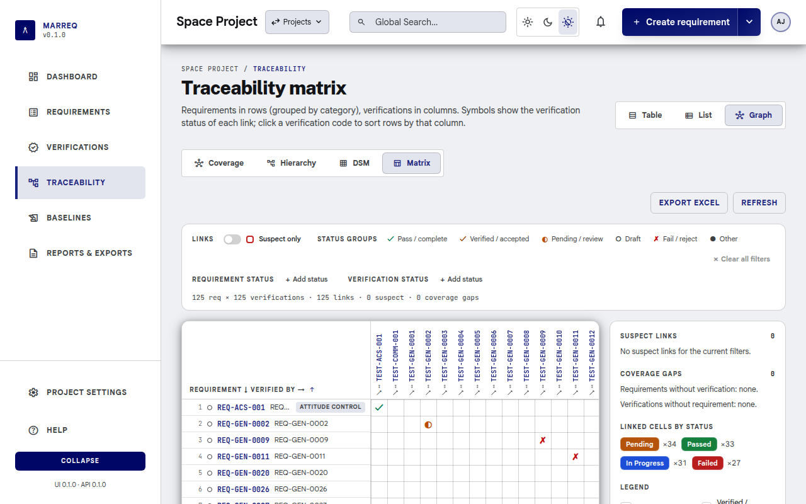
6.2 Using the Matrix
The matrix uses the same layout as the dependency structure matrix
(§6.4).
- Grid: requirements are rows and verifications are
columns. The header rows stay visible while you scroll in either
direction. A symbol in a cell means the requirement is verified by that
verification, and shows the verification's status: ✓
pass/complete, ✓ verified/accepted, ◐
pending/review, ○ draft, ✗
fail/reject, ● other (in the status colour). Empty
cells are not linked.
- Rows: grouped by category
(categories in alphabetical order, Uncategorised last; a line
and the category name separate them), requirements in reference-code
order. Click the corner header to reverse the order, and drag its right
edge to resize the requirement column; the width is remembered per
project. A dot before each requirement shows its approval (Reviewed or
Approved).
- Sort by a verification: click a verification's code
in the column header to list the requirements it verifies first (suspect
links first among them); the category grouping is dropped while sorting
this way. Click again to reverse. The ↗ below the code
opens the verification.
- Open: click a linked cell or a requirement's code
to open the requirement.
- Hover a requirement, a verification or a cell to
see its details: title, category, status, approval state, link counts
and, for suspect links, the reason and date.
- Filters (above the matrix, together with the global
search):
- Links › Suspect only: a switch that keeps only
suspect links.
- Status groups: Pass / complete,
Verified / accepted, Pending / review,
Draft, Fail / reject and
Other. Select one or more to show only verifications in
those groups. The group (and the cell symbol) comes from words in the
status title, such as "pass", "accepted" or "fail", not from
the status outcome used for close-out.
- Requirement status and Verification
status: each selected status appears as a chip in its own
colour. Select × on a chip to remove it. Add
status opens a list of the project's statuses; tick one or
several, then press Escape or Tab, or click outside the list, to close
it. With the keyboard, use the arrow keys, Home and End to move, and
Space or Enter to tick.
- Clear all filters removes every filter at once and
keeps the sort (it is disabled when no filter is set).
- Filters and sort are kept in the page URL (parameters starting with
mx_), so a filtered view can be bookmarked or shared.
- Summary line: the number of requirements and
verifications shown, links, suspect links and coverage gaps.
- Suspect links: shown with a red frame. The side
panel lists them.
- Click a suspect link in the panel to scroll the matrix to its
cell.
- Review compares the requirement version that
triggered the flag with its preceding version.
- Clear removes the flag at once (no confirmation);
the system records the user and timestamp.
- Coverage gaps: the side panel lists requirements
without any verification and verifications without any requirement (the
first eight, then +N more). Click one to scroll to its row or
column; click it again to deselect it.
- Linked cells by status in the side panel counts the
visible links per verification status.
6.3 Exporting the Matrix
- Export Excel above the matrix downloads the
coverage grid. Refresh reloads the data.
- From Reports & exports, download:
- Matrix (.xlsx): coverage grid (requirements as
rows, verifications as columns,
Yes where linked). For
review, not for re-import.
- Matrix links (.xlsx): two columns
(
requirement_code, verification_code), one row
per link. Upload this file on Import as Matrix
links (same project is a no-op for existing pairs; use it to
copy links into another project that already has those codes).
6.4 Dependency Structure
Matrix (DSM)
The DSM shows how requirements depend on each other,
for a whole project on one screen. It complements the requirement ×
verification matrix above.
- Open it: Traceability →
DSM tab (URL
/<project-slug>/traceability?view=dsm).
- How to read it: rows and columns are the same
requirements in the same order, and the dark diagonal is the requirement
itself. A mark in row i, column j means requirement
i's current version links to requirement j. The letter
shows the link type: D derives from, R
refines, P depends on, S satisfies,
~ relates to. Several letters mean several links
between the same pair.
- Link types: toggle the chips to choose which
relations are drawn. Relates to is off by default.
- Order:
- Hierarchy (default) groups requirements by
category, drawn as framed blocks along the diagonal, and nests children
under their parent.
- Partition puts dependencies before the requirements
that depend on them. Ordinary dependencies then fall below the diagonal,
and marks above it point to feedback worth reviewing.
- Scope: limit the matrix to one
Category (All categories by default) or to the
Subtree of one requirement (Whole project by
default). Links to requirements outside the scope are counted in the
summary line but not drawn.
- Loops: requirements that depend on each other in a
circle (across any link types) are tinted amber and listed in the side
panel with the loop path. Hover a loop in the panel to highlight its
cells; click it to scroll to it. In Hierarchy order, selecting a loop
may switch to Partition so its requirements sit next to
each other; a notice says so. Loops are rare, because Marreq already
rejects circular links between versions, but they can appear when a link
points to an older version of a requirement.
- Upstream changed: a red frame marks an approved
requirement whose target was edited after that approval. Review
whether the approved requirement still holds. The side panel lists all
of them.
- Details: hover a cell to see the link types, the
target title, loop membership and any upstream change. Click a mark, or
a code in the row header, to open the requirement.
- Export Excel: downloads the matrix with the current
filters (sheets DSM, Loops and Legend), for
offline design reviews. Refresh reloads the data.
- The summary line counts requirements, links, loops, upstream changes
and links outside the scope. Link types, order, category and subtree are
kept in the URL.
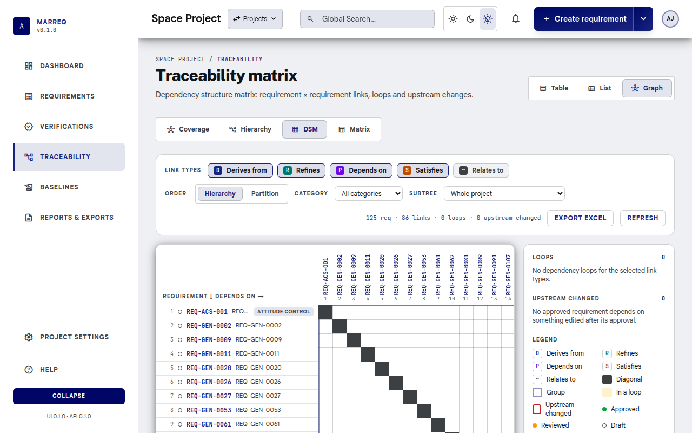
6.5 Hierarchy Graph
Traceability › Hierarchy
(/<project-slug>/traceability?view=hierarchy) draws
the parent ↔︎ child links: between requirements (solid) and between
verifications (dashed). Only items that have a parent or a child
appear.
- Requirements / Verifications / Both restricts the
graph; the choice is kept in the URL (
?kind=).
- Click a node to select it and highlight its links.
Double-click opens the requirement or
verification.
- Add child, shown once a node is selected, opens the
create page with that node as the parent
(
requirements/new?parent=<id> or
verifications/new?parent=<id>; see §4.3 and §5.3).
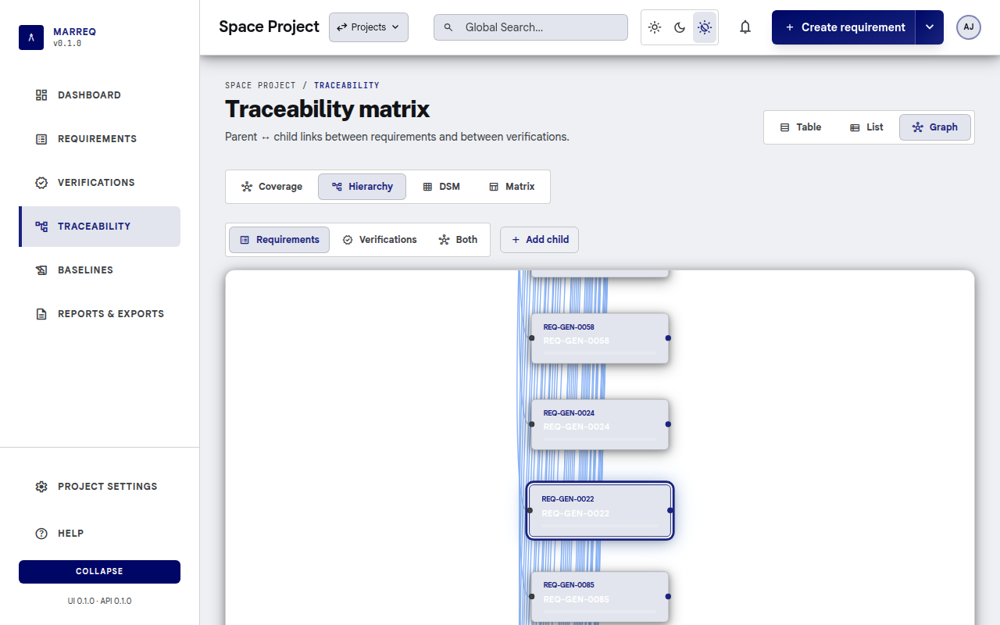
7. Baselines
Baselines are immutable point-in-time snapshots of
requirement versions and traceability for a project. Use them for
audits, releases, or comparison.
7.1 Baselines List
- Baselines in the sidebar, or
/<project-slug>/baselines.
The list shows each baseline's Name, Source
view (the saved view it was made from, if any) and
Created date; Details opens it. The
Create baseline form is at the top of the page.
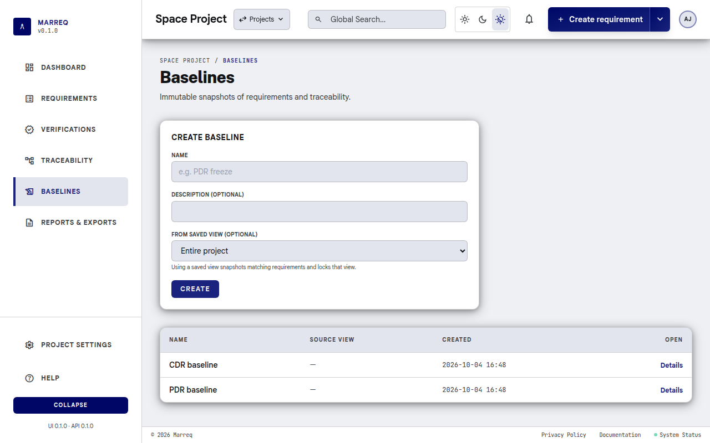
7.2 Creating a Baseline
In Create baseline on the Baselines page:
- Enter a Name and an optional
Description.
- Optionally choose From saved view (§4.1): only the requirements matching
that view are included, and the view is locked so it
keeps describing the baseline. Views already used by a baseline are not
offered.
- Select Create.
The system captures the current version of each
included requirement, the current traceability links
(requirement–verification), a snapshot of each
verification (name, status, type, …) and the list of attached
files at that moment. A baseline cannot be edited.
7.3 Viewing a Baseline
- Details in the list. URL:
/<project-slug>/baselines/<baseline_id>.
You see:
- The name and description, and
counters for requirements, verifications and traceability rows.
- Requirement snapshots: reference and title of each
requirement as frozen, with a Comparison column:
- Diff vs current opens a comparison of the frozen
version with the current one; Current unchanged means nothing
changed since.
- Compare with baseline (above the table) picks
another baseline; Diff baselines then compares the two
frozen versions of a requirement (the older baseline is shown as the
"before").
- Verification snapshots: reference, the status and
type at baseline time next to the current ones, and a comparison of the
frozen name, description, source, reference, status, type and parent
with the current verification (Unchanged, or
Unavailable when the verification was deleted since).
- Sample traceability: the first rows of the frozen
requirement–verification links (by requirement and verification number),
with their suspect flag.
- Attachments: the files attached to the included
requirements and verifications when the baseline was taken. Files
deleted since stay downloadable here and are marked deleted
since; they keep counting toward the project's storage until the
baseline no longer needs them.
- Export ReqIF and Export ReqIFZ (with
files) (§7.4).
7.4 Exporting a Baseline as
ReqIF
- On the baseline detail page: Export ReqIF downloads
the ReqIF 1.2 snapshot of that baseline; Export ReqIFZ (with
files) adds the files the baseline recorded, including ones
deleted since (§9.4).
- Project-wide current-state ReqIF is available from Reports
& exports → Requirements (.reqif).
8. Categories,
Applicability & Verification
These are project-level configuration entities used
to classify and manage requirements and verifications. They are edited
under Project settings › Catalog
(/<project-slug>/settings/catalog), one tab each.
Only project administrators (the project's Admin role,
or a site administrator) can change them; custom fields need
Manage custom fields, which the same roles have. Other
members see the tabs read-only.
| Tab |
What it holds |
URL |
| Categories |
Groups of requirements (e.g. “Safety”, “Performance”) |
…/settings/catalog/categories |
| Applicability |
Product lines, system types or scope (e.g. “Product A”, “All”) |
…/settings/catalog/applicability |
| Requirement statuses |
e.g. Draft, Accepted, Rejected |
…/settings/catalog/requirement-statuses |
| Verification statuses |
e.g. Pass, Fail, Not run |
…/settings/catalog/verification-statuses |
| Custom fields |
Extra requirement fields and their types |
…/settings/catalog/custom-fields |
| Verification methods |
How requirements are verified (e.g. Test, Analysis, Review) |
…/settings/catalog/verification-methods |
Each tab lists the entries and lets you add, edit and delete
them:
- Categories, Applicability and
Verification methods: title, description and tag.
- Requirement statuses and Verification
statuses: also a colour and, for the statuses every project
starts with, the System flag. System statuses cannot be edited
or deleted.
- Custom fields: label, type (
text,
number, boolean, or enum with one
option per line) and sort order.
Members without the permission see the tabs read-only, with a note
saying which permission is needed. The old
/<project-slug>/catalog/… URLs redirect here.
Each verification status also has an outcome:
Passed, Failed, In progress or Not
run. The outcome tells Marreq what the status means for requirement
close-out (§5.7).
New statuses get it from their title (a status called "Passed" is
Passed; an unknown title is Not run) unless you choose
one in Outcome when adding the status; you can change
it later for your own statuses.
9. Reports & Export
9.1 Reports Page
- Reports & exports in the sidebar, or
/<project-slug>/reports. The page is titled
Coverage & gaps; a bar at the top jumps to its
sections, and Refresh reloads it.
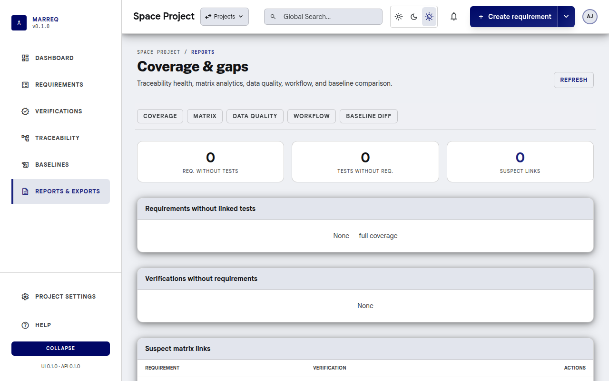
You see:
- Coverage: tiles for requirements without tests,
tests without requirements and suspect links, then each list in full,
with shortcuts to the Matrix and the graph. The Dashboard's Gaps,
Orphans and Suspect cards open these lists.
- Report documents: the VCD and the traceability
& coverage report as PDF or ODT (§9.6).
- Exports:
- Requirements (.xlsx), Verifications
(.xlsx), Matrix (.xlsx) and Matrix
links (.xlsx) (§6.3);
- Requirements PDF (the requirement list) and
Report PDF (the traceability & coverage report with
default settings);
- Requirements (.reqif) and Requirements with
files (.reqifz) (§9.4);
- Project bundle (.json) and Project bundle
with files (.zip) (§9.5).
- Matrix: requirements whose links are all suspect,
the verifications linked to the most requirements, requirements by
number of links, and coverage by category.
- Data quality: requirements and verifications with
missing information.
- Workflow: requirements by approval state, by author
and by reviewer.
- Baseline diff: the current traceability compared
with a baseline you choose.
9.2 Exporting Requirements
to Excel
- Reports & exports → Requirements (.xlsx), or
the Excel button on the Requirements list.
- The workbook (
.xlsx) contains every requirement in the
project with all configured fields, and a Comments
sheet when there are comments.
- The CSV button next to it downloads only the rows
currently shown (after filters and Global Search).
9.3 Exporting Verifications
to Excel
- Reports & exports → Verifications (.xlsx), or
the Excel button on the Verifications list.
- The workbook contains every verification in the project (name,
description, source, status, reference code, …), for test management or
reporting outside Marreq.
- The CSV button downloads only the rows currently
shown.
9.4 Exporting ReqIF
- Current project: open Reports and
download Requirements (.reqif) for the live requirement
set (comments are included as Remarks when present).
- Attachment file names are listed in an Attachments
attribute; the files themselves are not included in a
.reqif file.
- With the files: download Requirements with
files (.reqifz) instead. A ReqIFZ archive is a ZIP file holding
the
.reqif document and each requirement's attachments
under files/<attachment id>/<file name>. The
statements link to the files the standard ReqIF way (XHTML objects), so
DOORS, Polarion, Codebeamer and Marreq itself can pick them up.
- From a baseline: open the baseline and use
Export ReqIF for an immutable ReqIF 1.2 snapshot, or
Export ReqIFZ (with files) to include the files the
baseline recorded, including ones deleted since.
9.5 Exporting a project
bundle
- Open Reports and download Project bundle
(.json), or Project bundle with files (.zip)
to include the attachment files.
- The bundle is a portable snapshot of the project catalog, current
requirements, verifications, matrix links, comments, and members (by
username). It does not include version history, baselines or passwords;
the
.json bundle has no attachment files.
- The
.zip bundle holds bundle.json plus the
current attachment files of the requirements and verifications under
files/<attachment id>/<file name> (deleted
files and files only kept by a baseline are left out).
- Anyone who can view the project can export the bundle.
9.6 Report
documents (VCD and coverage report)
The Report documents card on the Reports page
produces formatted documents:
- Verification Control Document (VCD): for every
requirement, its verification method, the level and stage and evidence
recorded on its verifications, the compliance assessment and whether it
is closed (§5.7).
It follows ECSS-E-ST-10-02C Annex B.
- Traceability & coverage report: coverage
figures, coverage by group, requirements without verification,
verifications without requirements, suspect links and data quality.
Report PDF in the exports list is this report with its default
settings.
Choose the report, a template
(Default or a saved one) and the format, then
select Generate.
- PDF: page numbers, a table of contents with page
numbers, the matrix on landscape pages, and optionally an archival PDF/A
file.
- ODT (OpenDocument, for LibreOffice or Word): the
same content, ready to edit. To fill in page numbers in its table of
contents, right-click the contents in LibreOffice and choose
Update Index.
Customize… opens the report builder
(/<project-slug>/reports/builder):
- Sections: tick a section to include it. Reorder
with the arrow buttons or by dragging. Some sections have options (the
tune icon), for example how the matrix is grouped and which columns it
shows, or your own introduction text.
- Document: document ID, title, issue and revision,
classification, a watermark such as DRAFT (PDF only), page
size, PDF/A, and the signatories, change record and reference documents
printed in the front matter.
- Preview PDF opens the result in a new tab.
Download PDF and Download ODT save
it.
- Save as… stores the settings as a named template,
private or shared with all project members. Save
updates the selected template and Delete removes it.
Only the template's owner, a project Admin or an instance administrator
can change or delete it; anyone can still use it, or save their own
copy. Reset to default returns to the built-in
settings.
When a later version of Marreq adds a section, your saved templates
show it switched off, so they keep producing the same document.
10. Import
10.1 Importing from Excel or
CSV
- Open a project and go to Project settings › Import,
Create → Import, or
/{project-slug}/settings/import.
- You need Edit requirements permission.
- Upload a
.xlsx,
.xls or .csv
file (first sheet only).
- Click Upload and map columns.
- Choose Requirements,
Verifications, or Matrix links, map
each column to a Marreq field (or skip it), then
Import.
- Review the count and any per-row errors, then open the requirements
or verifications list. After a matrix import, open
Traceability (Matrix tab) to see coverage.
Unmapped catalog fields (status, category, applicability,
verification method) use project defaults. When a mapped file value does
not exist in the project (for example, a category from another
instance), the mapping page preselects a safe project default and asks
you to confirm or change it. Parent references remain strict and must
identify an existing requirement or an earlier successfully imported
row. Import creates new records; it does not update existing ones.
Excel/CSV requirement and verification import does not create matrix
links. After both sides exist, upload a second spreadsheet with
requirement and verification reference codes (Import as
Matrix links), or download Matrix links
(.xlsx) from Reports. Missing codes are reported; Marreq does
not invent records. Extra columns are ignored. Re-importing a file
exported from the same project skips pairs that already exist.
10.2 Importing ReqIF
- Open a project and go to Project settings › Import
(
/{project-slug}/settings/import). You need Edit
requirements permission.
- In the ReqIF 1.2 section, choose a
.reqif or
.xml file, or a
.reqifz archive.
- Click Import ReqIF. Marreq uses the first project
status, category, applicability, and verification method, and the
current user as author and reviewer.
- Review the imported count, created links, and any warnings or
errors, then open the requirements list.
Import creates new requirements; it does not update existing ones.
Custom attributes and original ReqIF identifiers are not persisted.
Empty catalogs (especially verification methods) cause the import to
fail until they exist.
ReqIFZ archives. Every .reqif document
in the archive is imported into the project. Each file a requirement's
text references (an XHTML object) becomes an attachment of that
requirement, with the same checks as a manual upload (§4.9): allowed types, the per-file limit and
the project's storage limit (§3.4). A
file that fails a check, or that is missing from the archive, is skipped
and listed as a warning; its requirement is still imported. Archives can
be up to 100 MB (MARREQ_REQIFZ_MAX_MB). Archives with
unsafe content (paths leading outside the archive, links, extreme
compression) are refused as a whole. Files attached in other,
tool-specific ways are not imported and are reported as a warning.
10.3 Importing a project
bundle
- Go to New project (
/projects/new) and
open Import from JSON bundle, or visit
/projects/import-bundle.
- Upload a bundle exported from Reports: the
.json bundle
or the .zip bundle with files. Optionally choose a group
namespace you manage.
- Marreq creates a new project (it does not merge
into an existing one). Catalog tags, requirement and verification
reference codes, matrix links, and comments are restored. Authors and
members are matched by username or email on this instance; missing users
are skipped or mapped to you.
- From a
.zip bundle, each file is attached to its
requirement or verification with the same checks as a manual upload (§4.9): allowed types, the per-file limit and
the new project's storage limit (§3.4). A file that fails a check is
skipped and listed as a warning; the rest of the project is imported.
Archives can be up to 100 MB (MARREQ_REQIFZ_MAX_MB).
- Without warnings you land on the new project's dashboard; otherwise
the warnings are shown first, with Open project.
This is separate from in-project Excel/CSV and ReqIF import, which
add records to the project you already have open.
11. Project Members
- Project settings › Members & reviewers.
- URL:
/<project-slug>/settings/members (the old
/<project-slug>/members redirects here).
You see each member and their role. Users with Manage
members (the project's Admins) can change roles and remove
members.
| Role |
Can |
| Admin |
Everything in the project: edit requirements and verifications,
manage members, the catalog, custom fields and project settings |
| Reviewer |
View and edit requirements and verifications |
| Author |
View and edit requirements and verifications |
| Viewer |
View only |
Approving versions and changing statuses is not part of any role: it
depends on the project reviewer list below.
- Add a member: under Add user, pick
an account and a role, then Add. Picking from all
accounts needs the user directory, which only instance administrators
can see; other managers are asked to have an administrator add
people.
- Remove a member: Remove next to
the member, then confirm.
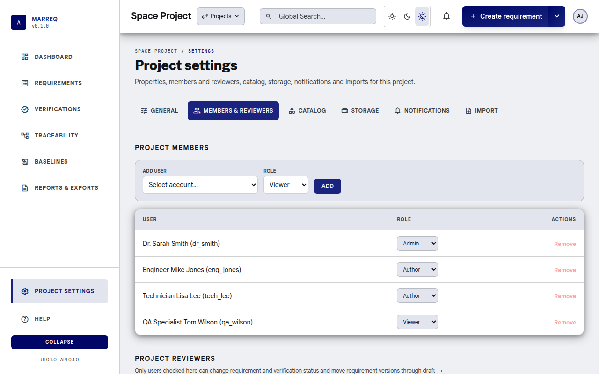
11.1 Project reviewers
(workflow gates)
Some actions are limited to a designated reviewer
list for the project (not the same as the “Reviewer” role):
- Who: on Project settings › Members &
reviewers, users with Manage members tick
which project members act as project
reviewers, then select Save reviewer list
(Reset undoes unsaved changes). Only members of the
project can be reviewers.
- What they control: requirement
status, verification status, and
version approval (draft → reviewed →
approved). Other editors can still change the other fields of
requirements and verifications, but not those.
- Reviewer fields: the Reviewer of a
requirement or verification is chosen from this list.
- Audit: reviews, approvals and status changes record
who made them.
No reviewers yet: while the list is empty, only
site administrators can change statuses and approve,
and Create requirement and Create
verification stay disabled, with Add a reviewer in
Project settings next to the button. Creating requirements also
needs at least one verification method (Add a verification
method).
Once the list has members, being a site
administrator does not bypass it: an administrator who needs these
powers must tick themselves too.
12. Profile & Account
12.1 Account Settings
- User menu (avatar, top-right) → Account
settings.
- URL:
/account.
The page has three sections: Profile (below),
Connected accounts (sign-in with external providers
such as company SSO; connect or disconnect, plus a Change
password link when your account has a password), and
Connected applications (apps you authorized through
OAuth, with Revoke).
12.2 Edit Profile
In Account settings → Profile:
- Username is shown read-only. It is also your
workspace path, so it cannot be changed here.
- Full name: your display name (2–100 characters),
shown in the header, as author/reviewer, and in logs.
- Email: must be a valid address not used by another
account. When you change it, enter your Current
password to confirm. Accounts that only sign in with an
external provider (no password) don't need one.
- Click Save profile. "Profile updated." confirms the
change, and the header shows the new name right away.
On the hosted cloud service, where email addresses must be verified,
the email field is read-only; contact your administrator to change it.
Administrators can also edit any user from Administration ›
Users (see §13.1).
12.3 Change Password
- User menu (avatar, top-right) → Change password.
Users with no projects can use Change password on the
empty home screen.
- URL:
/change-password.
Enter Current password, New
password, and Confirm new password. Passwords
must be at least 8 characters and must not be common, breached, or based
on your name or username. Submit; on success you are signed out and
redirected to sign in.
13. Administration
Available only to instance administrators
(is_admin). Open Administration from the
user menu (avatar, top right); other users don't see the entry. The area
lives outside any project at /admin, with tabs for
Users, System logs, Log
analytics and Backup, and a Back to
project link. Old /<project-slug>/admin/…
links redirect here.
13.1 User Management
- Administration › Users.
- URL:
/admin.
The User directory lists every account (username,
name, email, admin flag). Row actions:
- New user (header): username, full name, email,
password (entered twice), and optionally Site
administrator. Password-policy problems (too short, too common,
contains your username or email, …) are shown in the form.
- Edit: change username, name, email, and the
Site administrator flag. You cannot remove your own
administrator rights, and at least one administrator must remain.
- Set password: choose a new password for the user
without knowing the old one. The user is signed out of their other
sessions.
- Delete: asks for confirmation. You cannot delete
your own account. A user who still owns or authored records (groups,
baselines, saved views, requirements, …) cannot be deleted until those
are reassigned.
In deployments where users self-register (hosted
cloud mode), New user is hidden and the Site
administrator flag cannot be changed; the remaining actions
work the same way. All changes are recorded in System
logs.
13.2 Database Backup
- Administration › Backup (not shown in the hosted
cloud mode).
- URL:
/admin/backup.
Download backup runs pg_dump on the
server and downloads the whole database (all projects, users, and audit
logs) together with the attachment files, as
marreq-backup_<YYYYMMDD>_<HHMMSS>.tar.gz. The
archive holds database.sql, the attachments/
folder and a manifest.json. Include attachment
files (ticked by default) shows how many files there are and
their size; untick it for a smaller, database-only backup. Nothing is
stored on the server. Large databases can take a few minutes; keep the
page open. The file contains password hashes and all project data, so
store it securely. Each download (or failure) is recorded in
System logs as an EXPORT entry.
To restore, unpack the archive, load database.sql into
an empty database with psql from
PostgreSQL 17 or newer, and copy attachments/ into the
attachment directory (MARREQ_ATTACHMENTS_DIR, the
marreq_attachments Docker volume):
tar xzf marreq-backup_YYYYMMDD_HHMMSS.tar.gz
psql "$DATABASE_URL" < marreq-backup_YYYYMMDD_HHMMSS/database.sql
cp -a marreq-backup_YYYYMMDD_HHMMSS/attachments/. "$MARREQ_ATTACHMENTS_DIR"/
For the Docker volume commands (and the file owner), see Backup
and Restore in the database setup guide. A database-only backup
needs the attachments volume backed up separately.
Available on self-hosted (marreq-server) installations
only. In the hosted cloud mode the page explains that backups are
managed by the hosting operator.
13.3 System Logs
- Administration › System logs.
- URL:
/admin/logs.
The audit log of the whole instance, newest first, with the columns
Time, User, Action,
Entity, Project and
Summary. Open a row to see the changed fields with
their old and new values.
- Filters: entity type, entity ID, user ID, action,
project ID, and a Since / Until range;
select Filter to apply them. The list is paged.
- Export JSON downloads the entries matching the
filters (and is itself recorded as an
EXPORT entry).
- Cleanup older than N days deletes old entries,
after a confirmation.
13.4 Log Analytics
- Administration › Log analytics.
- URL:
/admin/logs/analytics.
A summary of instance-wide activity from the audit log, for the last
7, 30 (default), or
90 days:
- Events, Average per day,
Active users (distinct users with at least one event),
and Busiest day.
- Events per day: one bar per day; hover or focus a
bar for the exact count, or use Show as table.
- Top actions and Top users (ten
each): click an entry to open System logs filtered to
that action or user for the same period.
Days are calendar days in UTC. Available to
administrators only.
14. Tips & Shortcuts
- Theme: the light / dark / match-system switch in
the top bar (on wider screens) or on the login page; the choice is
stored in the browser.
- Keyboard:
- In the statement and description editor: Ctrl/Cmd+B
bold, Ctrl/Cmd+I italic, Ctrl/Cmd+K
link.
- Esc closes menus, dialogs, the notifications panel,
the sidebar on narrow screens and inline editors.
- Ctrl/Cmd+click selects several values in
multi-select lists, such as verification methods.
- Diffs: requirement, verification and baseline
comparisons use red for removed, green
for added and gray for unchanged text.
- Breadcrumbs: the requirement and verification pages
show a path (Requirements › …); use it to go back to the list.
- Links keep state: filters, sorting, saved views,
the Matrix and DSM settings and the hierarchy filter are part of the
URL, so a bookmark or a shared link opens the same view.
- Project context: the sidebar pages and Project
settings belong to the current project; switch projects with the
Projects menu in the top bar (you stay on the same
page).
- Export formats: requirements, verifications, matrix
grid and matrix links as Excel (
.xlsx), lists as CSV, ReqIF
as XML (.reqif) or a ZIP with the files
(.reqifz), project bundles as JSON or ZIP, and report
documents as PDF or ODT.
Support
For installation, database setup, API reference, and MCP (Model
Context Protocol) integration, see the main project
README and the docs index
plus the developer docs (e.g. database setup, MCP setup). For bugs or feature
requests, use the project’s issue tracker.